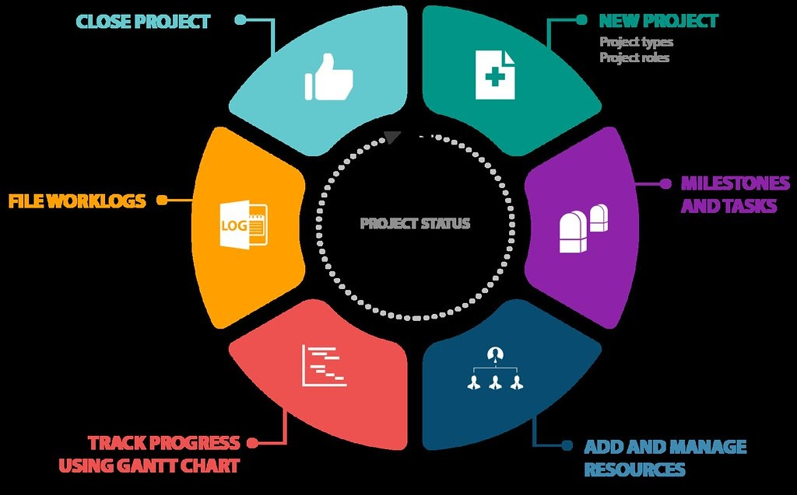

Project Management in Software Development: The Complete & Practical Guide to Succeed
As companies transition into the tech storm of the 21st-century, the hassles of effectively managing and streamlining the software development pipeline are escalating like never before. Whether you’re a rising startup looking to optimize total productivity and output of your software projects, or a well-established tech (or non-tech) corporation looking to scale your team’s software management efficiency, project management in software development is crucial in order to address all scopes of your business model.
What is Software Development and Project Management?
Oftentimes, when we envision the monster that is project management in software development, we fall down the rabbit hole of imagining a simple ‘one-size-fits-all’ project management model that mutually streamlines both the business and software-related (code) build and release of a company’s product. However, software development projects can be better seen as complex undertakings, where leaders must analyze the cost-benefits and optimization problems between business value and the software development pipeline and processes. In an ever-evolving landscape where business management and tech are, essentially, both close family relatives, software development projects are complex tasks led by two or more persons, bounded by time, budget, and staffing resources to produce novel or enhanced computer code with resource allocation and execution in mind.
More generally, software projects are defined by a comprehensive development pipeline, all the way from initial gathering to testing and maintenance, carried within a given timeline to achieve the intended final product.
The purpose? Adding significant business value to new/existing business processes and models. Now, what actionable benefit does this have for your business?
- more competition
- better project planning
- improved resource allocation
- excellent budgeting
- Communication
- documentation!
In contrast to traditional project management models, software development is relatively unique, as software projects require a distinct lifecycle and phased development process that demands several rounds of user and internal testing, updating, and analysis of customer feedback. I know it seems nerve-wracking. Luckily for you, most IT-related projects are managed and implemented in the agile style, keeping up with your pace of business and allowing you to iterate based on customer and stakeholder feedback.
The ‘Who’ and ‘What’ of a Project Manager
Simply put, software project management is the ‘butter on the bread’, mending business management with the software development cycle. Project managers are responsible for efficiently executing all the nitty-gritty details of the software project from start to finish. Most importantly, they are aware of all phases in the Software Development Life Cycle (SDLC) that the software project would undergo, streamlining the initial planning and long-term maintenance of the project at hand. By closely monitoring the project management in the software development process, experimenting with various plans, allocating resources/budget, and solidifying communication amongst the team, software project managers ensure that final product goals are met under all constraints while still maximizing customer satisfaction.
1. Project Estimation
Perhaps *the most* vital aspect of the initial project planning phase, project size estimation is crucial in determining the cost, duration, and trajected efforts necessary for the project.
These estimations include:
- Time: Total projected time to complete the project and, if necessary, its subparts.
- Cost: Summary of total expenses to develop the software product.
- Effort: Estimated effort demanded to complete the project under any given conditions and constraints.
As a project manager, it is crucial that you accurately specify these time, cost, and effort estimations, as all future planning and executions are dependent on these projections.
2. Scheduling and Resource Allocation
In the context of project management in software development, project managers should schedule and allocate all required ‘manpower’ and resources for software project development after finalizing the estimations above.
3. Staffing
Establish and decide on a team structure and staffing plan. Gain feedback from the team on work burdens and their task progress to reallocate/reorganize the staff accordingly.
4. Risk Management
As a software project manager, you must identify and analyze any unanticipated risks that might arise during the project development lifecycle. Devise your own risk reduction method to minimize/eliminate potential risks and unintended consequences during software development.
5. Miscellaneous Planning
Finally, catch your breath! During this stage, a project manager may establish several other plans including quality assurance, configuration management, etc. Additional planning is conditioned on project monitoring and control, a cycle where the PM actively diagnoses potential risks and obstacles during development and uses planning to resolve those risks.
The Five Stages of Project Management in Software Development
Whether you’re a junior or senior project manager, a common principle in the software development and management pipeline will always hold true: following and maintaining the Software Development Life Cycle (SDLC). By adapting the SDLC process to your project timeline, your project initiation, planning, monitoring, and closure will be streamlined, enabling the team to finish in time without sacrificing the integrity of the given project! Project management in software development essentially uses the general project management template with software-specific goals that streamline the process.
The 5 stages of project management in software development are outlined as follows:
1. Project Initiation
It may seem intimidating, but do not worry—by establishing a simple foundation of ideas and preliminary goals for your project, you’re bound to create a surefire template for the next four phases of your project management timeline. Project initiation involves morphing an abstract idea into a meaningful goal with actionable future steps. During project initiation, a PM should develop a business case and define the project on a broad level. Project managers can easily initiate this with a project charter. A project charter is a document consisting of critical details, including project constraints, goals, appointment of the project manager, expected timeline, budget(s), staffing, etc. Once a manager has illustrated a clear path forward with their charter, they should identify key project stakeholders (i.e. future members involved in the project). This can be easily accomplished by creating a stakeholder register. In a project charter, two evaluation tools are used to decide whether a project is worth pursuing.
These tools can be tailored to optimize the process of project management in software development.
- Business Case Document: This document justifies the necessities of the project and includes an estimate of potential financial benefits.
- Feasibility Study: PMs use this to evaluate a project’s objectives, timeline, and costs to determine whether a project is worth executing. Feasibility studies simply allow you to assess a project based on Requirements of the project Available resources.
2. Project Planning
It is crucial that a project manager diligently lays out the project planning stage, as it is a decisive factor for the project’s roadmap. Typically, this can be fulfilled with agile project management, effectively breaking down weeks of planning into mere days. The PM should identify technical requirements and develop a detailed project schedule by creating a clear communication plan and establishing goals/deliverables. Additionally, requirement analysis can be used during planning with inputs from the customer, sales department, market surveys and domain experts in the industry. For project management in software development, cross-collaboration is crucial, as it links the development team with the business management teams.
3. Project Execution
During project execution, all hands are on deck, and team members begin completing the actual work and subtasks of the project. A project manager should look forward to establishing efficient workflows while diligently monitoring the collective progress of the team. Additionally, a project manager must maintain effective collaboration between stakeholders and all team members involved. Ultimately, this will ensure that everyone is one the same page and the project runs without any glaring issues.
4. Project Monitoring and Controlling
Although project monitoring is a process that associates with each and every stage of the project management timeline, project managers should use this time to specifically ensure those project objectives and deliverables are fulfilled. A project manager will ensure that no one deviates from the original course of the project by setting both Critical Success Factors (CSF) and Key Performance Indicators (KPI). Finally, the manager will also quantitatively record and track the effort/cost during the process, ensuring that constraints such as budget and time are met with long-term sustainability in mind.
5. Project Closure
Finally, you’re here—phew! This final phase of the project management process typically follows after the final delivery of the product. Occasionally, external talent is hired specifically for the project on contract. Additionally, a PM will be responsible for terminating these contracts and completing any necessary paperwork and documentation. Oftentimes, teams will hold a reflection meeting upon project completion in order to contemplate their comprehensive successes and failures before, during, and after development. This method of reflection provides a sense of continuous improvement for the team, enhancing the overall productivity and output of the team for the company. Finally, a project manager should review the entirety of the project (from start to finish), complete a detailed report that covers after facet (e.g. five stages of project management in software development) of the project, and securely store it for future reference.

The Most Important Skills for a Project Manager to Succeed
- Be a Supportive Team Leader: A rising project manager should develop leadership for the mutual benefit of the project, the company, and its team. More specifically, an effective software project manager arranges a team of diverse members with various skills who can efficiently complete their given task(s).
- Motivate your team members: By encouraging your team member(s) to work properly, a project manager ensures that a non-intimidating, yet effective, team atmosphere is established. Additionally, this will prevent burnout amongst team members and enable them to fulfill project requirements in a timely manner.
- Tracking progress: Ultimately, it is imperative that a project manager monitors progress in real-time for both the short-term and long-term stability of the software project. Additionally, the PM will ensure that the product is developed with the correct coding standards.
- Documentation and project report: The PM will eventually prepare final documentation of the project for future reference and implementations, detailing project features and techniques. All in all, these reports will contribute to future project management in software development-related tasks.
- Acting as a liaison: Remember when I mentioned that software project managers are the butter between the breads of business and software? Well, this is put into action, as PMs link the development team with the customer by analyzing customer requirements and relaying them to the development team. Through a proactive relationship between development and management, managers will communicate new updates to the client(s) and finetune the project when necessary.
Conclusion
Whether you’re grappling with a large corporate team that develops cutting-edge software solutions, or a small-mid sized startup in the first round of creating their beta software, project management in software development is more essential than ever before. By streamlining your software development process with a five-stage SDLC and project management timeline, your company is bound to finish and release final products in a timely and organized fashion.
However, in order to accomplish this ‘holy grail’ of efficiency and organization, project managers must enthusiastically manage a team of developers and guarantee that deadlines are met! For most companies to fulfill a project, finding the right people is like finding a needle in a haystack, leading to missed deadlines. However, you can outsource and hire remote developers to complete and build your team, guaranteeing that project deadlines and constraints are met. Learn more by reading our complete guide here!

About The Author
Daniel Fleury is a technical content writer that ideates, produces, and tailors actionable content for consumers and businesses.